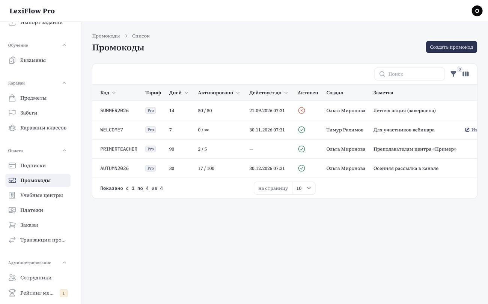
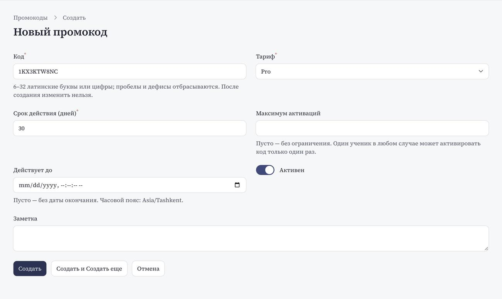

Промокод даёт ученику Pro на заданное число дней — для рассылок, вебинаров, партнёров. Раздел Оплата → Промокоды доступен только администратору.

summer-2026 → SUMMER2026). Код должен быть уникальным и после создания не меняется.
Ученик вводит код в мини-приложении («Есть промокод?») или отправляет боту в личном чате /promo КОД. Если у него уже есть Pro с датой окончания, дни прибавляются к ней. Колонка «Активировано» растёт сама — вручную её не изменить.
Создание кода и каждое изменение лимитов, срока, флажка «Активен» и заметки записываются в журнал аудита.
Ученик, который потерял место в учебном центре (вышел или его удалили) и у которого нет своего Pro, автоматически получает разовую скидку 30 % на первый месяц на 14 дней и сообщение бота с кнопками оплаты. Скидка расходуется только оплаченным заказом. Скидки ученика видны в его карточке, вкладка Персональные скидки (глава «Ученики»). Скидку, выданную по ошибке, отменяет кнопка Аннулировать — ученик теряет её сразу.